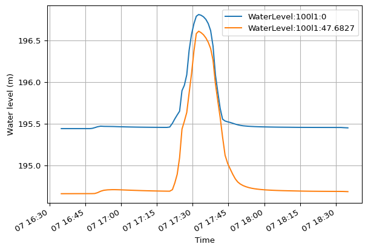
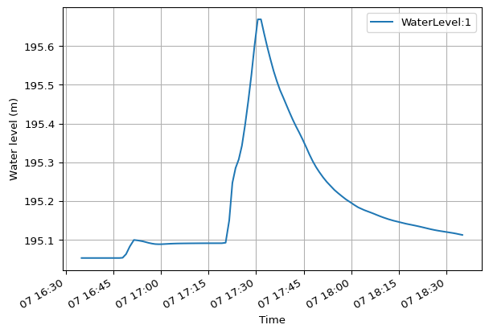

import mikeio1dRes1D - basic
Extract res1d results for a collection system or river to a pandas DataFrame.
Res1D
# Check contents
res = mikeio1d.open("../data/network.res1d")
res.info()Start time: 1994-08-07 16:35:00
End time: 1994-08-07 18:35:00
# Timesteps: 110
# Catchments: 0
# Nodes: 119
# Reaches: 118
# Globals: 0
0 - Water level (m)
1 - Discharge (m^3/s)# Extract results to a pandas DataFrame
df = res.read()
df.head()| WaterLevel:1 | WaterLevel:2 | WaterLevel:3 | WaterLevel:4 | WaterLevel:5 | WaterLevel:6 | WaterLevel:7 | WaterLevel:8 | WaterLevel:9 | WaterLevel:10 | ... | Discharge:99l1:22.2508 | WaterLevel:9l1:0 | WaterLevel:9l1:10 | Discharge:9l1:5 | WaterLevel:Weir:119w1:0 | WaterLevel:Weir:119w1:1 | Discharge:Weir:119w1:0.5 | WaterLevel:Pump:115p1:0 | WaterLevel:Pump:115p1:82.4281 | Discharge:Pump:115p1:41.214 | |
|---|---|---|---|---|---|---|---|---|---|---|---|---|---|---|---|---|---|---|---|---|---|
| 1994-08-07 16:35:00.000 | 195.052994 | 195.821503 | 195.8815 | 193.604996 | 193.615005 | 193.625000 | 193.675003 | 193.764999 | 193.774994 | 193.804993 | ... | 0.000002 | 193.774994 | 193.764999 | 0.000031 | 193.550003 | 188.479996 | 0.0 | 193.304993 | 195.005005 | 0.0 |
| 1994-08-07 16:36:01.870 | 195.052994 | 195.821701 | 195.8815 | 193.604996 | 193.615005 | 193.625320 | 193.675110 | 193.765060 | 193.775116 | 193.804993 | ... | 0.000002 | 193.775070 | 193.765060 | 0.000031 | 193.550003 | 188.479996 | 0.0 | 193.306061 | 195.005005 | 0.0 |
| 1994-08-07 16:37:07.560 | 195.052994 | 195.821640 | 195.8815 | 193.604996 | 193.615005 | 193.625671 | 193.675369 | 193.765106 | 193.775513 | 193.804993 | ... | 0.000002 | 193.775391 | 193.765106 | 0.000033 | 193.550034 | 188.479996 | 0.0 | 193.307144 | 195.005005 | 0.0 |
| 1994-08-07 16:38:55.828 | 195.052994 | 195.821503 | 195.8815 | 193.604996 | 193.615005 | 193.626236 | 193.675751 | 193.765228 | 193.776077 | 193.804993 | ... | 0.000002 | 193.775894 | 193.765228 | 0.000037 | 193.550079 | 188.479996 | 0.0 | 193.308884 | 195.005005 | 0.0 |
| 1994-08-07 16:39:55.828 | 195.052994 | 195.821503 | 195.8815 | 193.604996 | 193.615005 | 193.626556 | 193.675949 | 193.765335 | 193.776352 | 193.804993 | ... | 0.000002 | 193.776154 | 193.765335 | 0.000039 | 193.550095 | 188.479996 | 0.0 | 193.309860 | 195.005005 | 0.0 |
5 rows × 495 columns
Reaches
# See info related to nodes
res.reaches
<ResultReaches> (118)
Quantities (2)
- Water level (m)
- Discharge (m^3/s)
Derived Quantities (6)
- ReachAbsoluteDischarge
- ReachFilling
- ReachFlooding
- ReachQQManning
- ReachWaterDepth
- ReachWaterLevelAboveCritical
# Get reach water levels
df_reaches = res.reaches.WaterLevel.read()
df_reaches.head()| WaterLevel:100l1:0 | WaterLevel:100l1:47.6827 | WaterLevel:101l1:0 | WaterLevel:101l1:66.4361 | WaterLevel:102l1:0 | WaterLevel:102l1:10.9366 | WaterLevel:103l1:0 | WaterLevel:103l1:26.0653 | WaterLevel:104l1:0 | WaterLevel:104l1:34.4131 | ... | WaterLevel:98l1:0 | WaterLevel:98l1:16.0098 | WaterLevel:99l1:0 | WaterLevel:99l1:44.5016 | WaterLevel:9l1:0 | WaterLevel:9l1:10 | WaterLevel:Weir:119w1:0 | WaterLevel:Weir:119w1:1 | WaterLevel:Pump:115p1:0 | WaterLevel:Pump:115p1:82.4281 | |
|---|---|---|---|---|---|---|---|---|---|---|---|---|---|---|---|---|---|---|---|---|---|
| 1994-08-07 16:35:00.000 | 195.441498 | 194.661499 | 195.931503 | 195.441498 | 193.550003 | 193.550003 | 195.801498 | 195.701508 | 197.072006 | 196.962006 | ... | 194.581497 | 194.511505 | 194.661499 | 194.581497 | 193.774994 | 193.764999 | 193.550003 | 188.479996 | 193.304993 | 195.005005 |
| 1994-08-07 16:36:01.870 | 195.441498 | 194.661621 | 195.931503 | 195.441605 | 193.550140 | 193.550064 | 195.801498 | 195.703171 | 197.072006 | 196.962051 | ... | 194.581497 | 194.511841 | 194.661575 | 194.581497 | 193.775070 | 193.765060 | 193.550003 | 188.479996 | 193.306061 | 195.005005 |
| 1994-08-07 16:37:07.560 | 195.441498 | 194.661728 | 195.931503 | 195.441620 | 193.550232 | 193.550156 | 195.801498 | 195.703400 | 197.072006 | 196.962082 | ... | 194.581497 | 194.511795 | 194.661667 | 194.581497 | 193.775391 | 193.765106 | 193.550034 | 188.479996 | 193.307144 | 195.005005 |
| 1994-08-07 16:38:55.828 | 195.441498 | 194.661804 | 195.931503 | 195.441605 | 193.550369 | 193.550308 | 195.801498 | 195.703690 | 197.072006 | 196.962112 | ... | 194.581497 | 194.511581 | 194.661865 | 194.581497 | 193.775894 | 193.765228 | 193.550079 | 188.479996 | 193.308884 | 195.005005 |
| 1994-08-07 16:39:55.828 | 195.441498 | 194.661972 | 195.931503 | 195.441605 | 193.550430 | 193.550369 | 195.801498 | 195.703827 | 197.072006 | 196.962128 | ... | 194.581497 | 194.511505 | 194.661911 | 194.581497 | 193.776154 | 193.765335 | 193.550095 | 188.479996 | 193.309860 | 195.005005 |
5 rows × 247 columns
# Plot water levels for a specific reach
res.reaches['100l1'].WaterLevel.plot()
# See info related to a specific reach
res.reaches['100l1']
<Reach: 100l1>
Attributes (9)
- name: 100l1
- length: 47.6827148432828
- start_chainage: 0.0
- end_chainage: 47.6827148432828
- n_gridpoints: 3
- start_node: 100
- end_node: 99
- height: 0.30000001192092896
- full_flow_discharge: 0.12058743359507902
Quantities (2)
- Water level (m)
- Discharge (m^3/s)
Derived Quantities (6)
- ReachAbsoluteDischarge
- ReachFilling
- ReachFlooding
- ReachQQManning
- ReachWaterDepth
- ReachWaterLevelAboveCritical
Grid points
# See grid point info for a reach by chainage
res.reaches['100l1']['47.683']
<ResultGridPoint>
Attributes (5)
- reach_name: 100l1
- chainage: 47.6827148432828
- xcoord: -687907.999206543
- ycoord: -1056412.0
- bottom_level: 194.66000366210938
Quantities (1)
- Water level (m)
Derived Quantities (0)
# Alternatively, index grid points by index number (e.g. '0' for first, '-1' for last, etc.).
res.reaches['100l1'][-1]
<ResultGridPoint>
Attributes (5)
- reach_name: 100l1
- chainage: 47.6827148432828
- xcoord: -687907.999206543
- ycoord: -1056412.0
- bottom_level: 194.66000366210938
Quantities (1)
- Water level (m)
Derived Quantities (0)
# Plot water level at a gridpoint
res.reaches['100l1'][0].WaterLevel.plot()Nodes
# See info related to nodes
res.nodes
<ResultNodes> (119)
Quantities (1)
- Water level (m)
Derived Quantities (3)
- NodeFlooding
- NodeWaterDepth
- NodeWaterLevelAboveCritical
# Get node water levels
df_nodes = res.nodes.WaterLevel.read()
df_nodes.head()| WaterLevel:1 | WaterLevel:2 | WaterLevel:3 | WaterLevel:4 | WaterLevel:5 | WaterLevel:6 | WaterLevel:7 | WaterLevel:8 | WaterLevel:9 | WaterLevel:10 | ... | WaterLevel:46 | WaterLevel:55 | WaterLevel:58 | WaterLevel:116 | WaterLevel:117 | WaterLevel:118 | WaterLevel:115 | WaterLevel:119 | WaterLevel:120 | WaterLevel:Weir Outlet:119w1 | |
|---|---|---|---|---|---|---|---|---|---|---|---|---|---|---|---|---|---|---|---|---|---|
| 1994-08-07 16:35:00.000 | 195.052994 | 195.821503 | 195.8815 | 193.604996 | 193.615005 | 193.625000 | 193.675003 | 193.764999 | 193.774994 | 193.804993 | ... | 194.074997 | 195.005005 | 193.554993 | 193.550003 | 193.585007 | 193.585007 | 193.304993 | 193.550003 | 193.550003 | 193.779999 |
| 1994-08-07 16:36:01.870 | 195.052994 | 195.821701 | 195.8815 | 193.604996 | 193.615005 | 193.625320 | 193.675110 | 193.765060 | 193.775116 | 193.804993 | ... | 194.074997 | 195.005005 | 193.555023 | 193.550064 | 193.585831 | 193.586807 | 193.306061 | 193.550003 | 193.550003 | 188.479996 |
| 1994-08-07 16:37:07.560 | 195.052994 | 195.821640 | 195.8815 | 193.604996 | 193.615005 | 193.625671 | 193.675369 | 193.765106 | 193.775513 | 193.804993 | ... | 194.074997 | 195.005005 | 193.555084 | 193.550110 | 193.586426 | 193.588196 | 193.307144 | 193.550034 | 193.550003 | 188.479996 |
| 1994-08-07 16:38:55.828 | 195.052994 | 195.821503 | 195.8815 | 193.604996 | 193.615005 | 193.626236 | 193.675751 | 193.765228 | 193.776077 | 193.804993 | ... | 194.074997 | 195.005005 | 193.555191 | 193.550156 | 193.586960 | 193.589706 | 193.308884 | 193.550079 | 193.550003 | 188.479996 |
| 1994-08-07 16:39:55.828 | 195.052994 | 195.821503 | 195.8815 | 193.604996 | 193.615005 | 193.626556 | 193.675949 | 193.765335 | 193.776352 | 193.804993 | ... | 194.074997 | 195.005005 | 193.555267 | 193.550171 | 193.587112 | 193.590317 | 193.309860 | 193.550095 | 193.550003 | 188.479996 |
5 rows × 119 columns
# Plot water level of specific node
res.nodes['1'].WaterLevel.plot()
# See info related to a specific node
res.nodes['1']
<Manhole: 1>
Attributes (8)
- id: 1
- type: Manhole
- xcoord: -687934.6000976562
- ycoord: -1056500.69921875
- ground_level: 197.07000732421875
- bottom_level: 195.0500030517578
- critical_level: inf
- diameter: 1.0
Quantities (1)
- Water level (m)
Derived Quantities (3)
- NodeFlooding
- NodeWaterDepth
- NodeWaterLevelAboveCritical
Catchments
# See info related to catchments
res = mikeio1d.open("../data/catchments.res1d")
res.catchments
<ResultCatchments> (31)
Quantities (5)
- Total Runoff (m^3/s)
- Actual Rainfall (m/s)
- Zink, Load, RR (kg/s)
- Zink, Mass, Accumulated, RR (kg)
- Zink, RR (mg/l)
Derived Quantities (0)
# Extract runoff to a pandas DataFrame
df = res.catchments.TotalRunOff.read()
df.head()| TotalRunOff:100_16_16 | TotalRunOff:105_1_1 | TotalRunOff:10_22_22 | TotalRunOff:113_21_21 | TotalRunOff:118_30_30 | TotalRunOff:119_32_32 | TotalRunOff:14_20_20 | TotalRunOff:20_2_2 | TotalRunOff:22_8_8 | TotalRunOff:25_26_26 | ... | TotalRunOff:64_12_12 | TotalRunOff:67_18_18 | TotalRunOff:6_25_25 | TotalRunOff:76_7_7 | TotalRunOff:79_10_10 | TotalRunOff:82_27_27 | TotalRunOff:84_15_15 | TotalRunOff:90_28_28 | TotalRunOff:94_9_9 | TotalRunOff:9_3_3 | |
|---|---|---|---|---|---|---|---|---|---|---|---|---|---|---|---|---|---|---|---|---|---|
| 1994-08-07 16:35:00 | 0.0 | 0.0 | 0.0 | 0.0 | 0.0 | 0.0 | 0.0 | 0.0 | 0.0 | 0.0 | ... | 0.0 | 0.0 | 0.0 | 0.0 | 0.0 | 0.0 | 0.0 | 0.0 | 0.0 | 0.0 |
| 1994-08-07 16:36:00 | 0.0 | 0.0 | 0.0 | 0.0 | 0.0 | 0.0 | 0.0 | 0.0 | 0.0 | 0.0 | ... | 0.0 | 0.0 | 0.0 | 0.0 | 0.0 | 0.0 | 0.0 | 0.0 | 0.0 | 0.0 |
| 1994-08-07 16:37:00 | 0.0 | 0.0 | 0.0 | 0.0 | 0.0 | 0.0 | 0.0 | 0.0 | 0.0 | 0.0 | ... | 0.0 | 0.0 | 0.0 | 0.0 | 0.0 | 0.0 | 0.0 | 0.0 | 0.0 | 0.0 |
| 1994-08-07 16:38:00 | 0.0 | 0.0 | 0.0 | 0.0 | 0.0 | 0.0 | 0.0 | 0.0 | 0.0 | 0.0 | ... | 0.0 | 0.0 | 0.0 | 0.0 | 0.0 | 0.0 | 0.0 | 0.0 | 0.0 | 0.0 |
| 1994-08-07 16:39:00 | 0.0 | 0.0 | 0.0 | 0.0 | 0.0 | 0.0 | 0.0 | 0.0 | 0.0 | 0.0 | ... | 0.0 | 0.0 | 0.0 | 0.0 | 0.0 | 0.0 | 0.0 | 0.0 | 0.0 | 0.0 |
5 rows × 31 columns
# Plot runoff for a specific catchment
df = res.catchments['20_2_2'].TotalRunOff.plot()
Dynamic selections
# Dynamically select results to extract into a pandas DataFrame.
res = mikeio1d.open("../data/network.res1d")
res.reaches['100l1'].Discharge.add()
res.reaches['101l1'].Discharge.add()
res.nodes['1'].WaterLevel.add()
df = res.read()
df.head()| Discharge:100l1:23.8414 | Discharge:101l1:33.218 | WaterLevel:1 | |
|---|---|---|---|
| 1994-08-07 16:35:00.000 | 0.000006 | 0.000004 | 195.052994 |
| 1994-08-07 16:36:01.870 | 0.000006 | 0.000004 | 195.052994 |
| 1994-08-07 16:37:07.560 | 0.000006 | 0.000004 | 195.052994 |
| 1994-08-07 16:38:55.828 | 0.000006 | 0.000004 | 195.052994 |
| 1994-08-07 16:39:55.828 | 0.000006 | 0.000004 | 195.052994 |